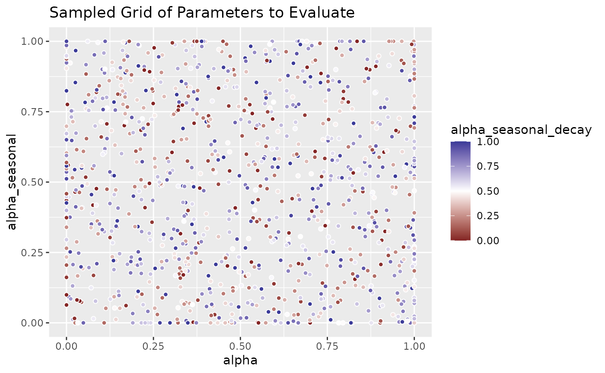

Generate a data frame of possible alpha values to evaluate during training
Source:R/list_alphas.R
list_sampled_alphas.RdGenerate a data frame of possible alpha values to evaluate during training
Usage
list_sampled_alphas(
n_target = 100,
alpha_lower = 0,
alpha_upper = 1,
alpha_seasonal_lower = 0,
alpha_seasonal_upper = 1,
alpha_seasonal_decay_lower = 0,
alpha_seasonal_decay_upper = 1,
oversample_lower = 0.05,
oversample_upper = 0.05,
include_edge_cases = FALSE,
seed = NULL
)Arguments
- n_target
The targeted number of 3-parameter tuples; since the tuples are generated by a one-time shot sampling (instead of, e.g., rejection sampling) and only distinct samples are returned, the realized length of the list of tuples may be shorter than
n_target. Especially whenoversample_lowerand/oroversample_upperare large compared to the allowed parameter range, the realized length of the resulting list can be shorter thann_targetas many tuples become{0,1}-valued.- alpha_lower
A numeric scalar in 0,1 serving as lower bound applied to the
alphaparameter of the returned tuples- alpha_upper
A numeric scalar in 0,1 serving as upper bound applied to the
alphaparameter of the returned tuples; must be at least as large asalpha_lower. When equal toalpha_lower, samples foralphawill be equal toalpha_lowerwill be equal toalpha_upper(as that is the only allowed value).- alpha_seasonal_lower
A numeric scalar in 0,1 serving as lower bound applied to the
alpha_seasonalparameter of the returned tuples- alpha_seasonal_upper
A numeric scalar in 0,1 serving as upper bound applied to the
alpha_seasonalparameter of the returned tuples; must be at least as large asalpha_seasonal_lower. When equal toalpha_seasonal_lower, samples foralpha_seasonalwill be equal toalpha_seasonal_lowerwill be equal toalpha_seasonal_upper(as that is the only allowed value).- alpha_seasonal_decay_lower
A numeric scalar in 0,1 serving as lower bound applied to the
alpha_seasonal_decayparameter of returned tuples- alpha_seasonal_decay_upper
A numeric scalar in 0,1 serving as upper bound applied to the
alpha_seasonal_decayparameter of the returned tuples; must be at least as large asalpha_seasonal_decay_lower. When equal toalpha_seasonal_decay_lower, samples foralpha_seasonal_decaywill be equal toalpha_seasonal_decay_lowerwill be equal toalpha_seasonal_decay_upper(as that is the only allowed value).- oversample_lower
A non-negative numeric scalar adding additional weight to the parameters' lower bounds during sampling. Since the sampling generally draws values from a continuous range, the border cases of the exact lower and upper bound (especially 0 and 1) would never be drawn even though they represent often well performing special cases. By specifying
oversample_lower, explicit probability is assigned to the lower bound value. Extends the lower boundsalpha_lower,alpha_seasonal_lower,alpha_seasonal_decay_lowertoalpha_lower - oversample_loweretc. during sampling of parameters viarunif(min = alpha_lower - oversample_lower, ...)etc. After sampling, parameter values are thresholded back toalpha_loweretc. For the default case of lower bounds equal to 0 and upper bounds equal to 1, the choice ofoversample_lower = 0.05creates a roughly 5% probability of returning exactly the lower bound value of 0 as parameter value.- oversample_upper
A non-negative numeric scalar adding additional weight to the parameters' upper bounds during sampling. Since the sampling generally draws values from a continuous range, the border cases of the exact lower and upper bound (especially 0 and 1) would never be drawn even though they represent often well performing special cases. By specifying
oversample_upper, explicit probability is assigned to the upper bound value. Extends the upper boundsalpha_upper,alpha_seasonal_upper,alpha_seasonal_decay_uppertoalpha_upper + oversample_upperetc. during sampling of parameters viarunif(max = alpha_upper + oversample_upper, ...)etc. After sampling, parameter values are thresholded back toalpha_upperetc. For the default case of lower bounds equal to 0 and upper bounds equal to 1, the choice ofoversample_lower = 0.05creates a roughly 5% probability of returning exactly the lower bound value of 1 as parameter value.- include_edge_cases
Logical; if
TRUE, a hardcoded set of tuples representing special cases of model specifications will be included. Since these take currently five entries of the list, this is only be useful whenn_targetis at least of length five. Otherwise the returned list will contain only (a subset of) the special cases. To achieve that,list_edge_alphas()is the preferred method. Including the special cases will lead to a comparison of sampled parameters to benchmarks such as the mean forecast, random walk forecast, or seasonal naive forecast.- seed
A random seed used while sampling parameters. Will reset the
.Random.seedto its value before the function call upon exit.
Value
A data frame with columns alpha, alpha_seasonal, and
alpha_seasonal_decay and at most n_target rows; all values are between
0 and 1
Examples
alphas_grid <- list_sampled_alphas(n_target = 1000L)
if (require("ggplot2")) {
ggplot2::ggplot(
alphas_grid,
ggplot2::aes(x = alpha, y = alpha_seasonal, fill = alpha_seasonal_decay)
) +
ggplot2::geom_point(pch = 21, color = "white") +
ggplot2::scale_fill_gradient2(midpoint = 0.5) +
ggplot2::labs(title = "Sampled Grid of Parameters to Evaluate")
}
